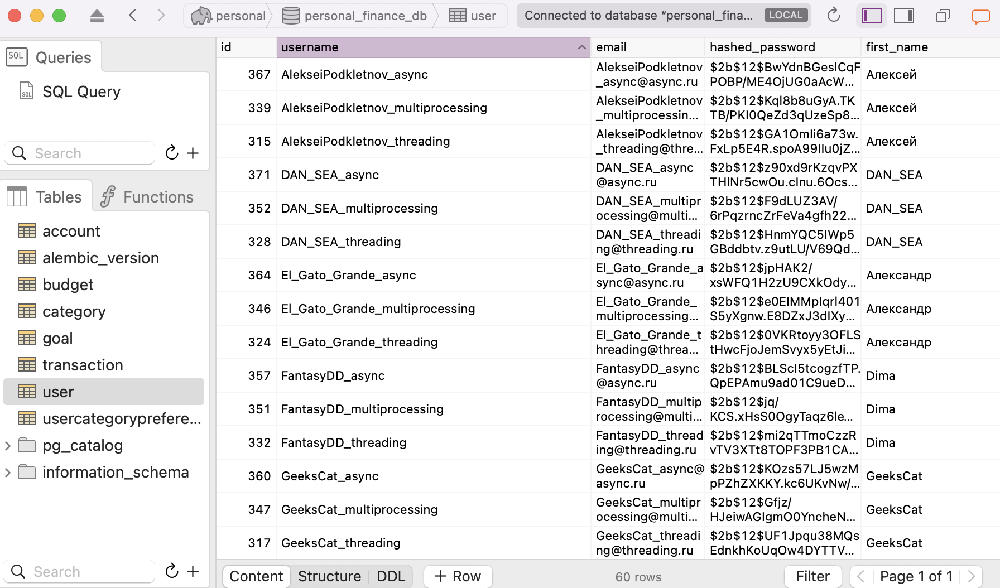

Лабораторная работа 2: Потоки. Процессы. Асинхронность в Python
Задача 1: Сравнение подходов на вычислительно-интенсивной задаче
Задача: Напишите три различных программы на Python, использующие каждый из подходов: threading, multiprocessing и async. Каждая программа должна решать считать сумму всех чисел от 1 до 1000000000. Разделите вычисления на несколько параллельных задач для ускорения выполнения.
Результаты замеров времени выполнения:
| Подход | Время выполнения (сек) | Относительная производительность |
|---|---|---|
| Threading | 15.90 | 1.0x |
| Multiprocessing | 5.71 | 2.78x |
| Async | 14.50 | 1.10x |
Анализ производительности каждого подхода:
1. Threading (Потоки)
Принцип работы: Потоки разделяют общую память в пределах одного процесса.
Преимущества:
-
Низкие накладные расходы на создание потоков
-
Простой обмен данными между потоками через общую память
Недостатки:
-
Ограничения Global Interpreter Lock (GIL), который позволяет выполнять только один фрагмент Python-кода в один момент времени
-
Отсутствие реального параллелизма для вычислительных задач
Результат: Потоки не смогли обеспечить значительное ускорение вычислительной задачи из-за блокировки GIL, что привело к практически последовательному выполнению операций.
2. Multiprocessing (Многопроцессорность)
Принцип работы: Каждый процесс имеет собственный интерпретатор Python и отдельное адресное пространство.
Преимущества:
-
Обход ограничений GIL благодаря запуску независимых процессов
-
Реальный параллелизм на многоядерных процессорах
-
Эффективное использование всех доступных ядер CPU
Недостатки:
-
Более высокие накладные расходы на создание процессов
-
Более сложный механизм обмена данными между процессами
Результат: Многопроцессорный подход показал наилучшую производительность для вычислительной задачи, в ~3 раза превзойдя другие подходы благодаря истинному параллельному выполнению на разных ядрах процессора.
3. Async (Асинхронное программирование)
Принцип работы: Конкурентное выполнение задач в одном потоке с переключением контекста в точках ожидания (await).
Преимущества:
-
Низкие накладные расходы на переключение между задачами
-
Эффективное использование I/O-операций
Недостатки:
-
Не обеспечивает параллелизм для CPU-интенсивных задач
-
Требует специального стиля программирования с использованием async/await
Результат: Показал наихудшие результаты для вычислительной задачи, так как асинхронный подход не предназначен для распараллеливания вычислений, а фокусируется на оптимизации операций ввода-вывода.
Задача 2: Сравнение подходов при работе с I/O-операциями
Задача: Напишите программу на Python для параллельного парсинга нескольких веб-страниц с сохранением данных в базу данных с использованием подходов threading, multiprocessing и async. Каждая программа должна парсить информацию с нескольких веб-сайтов, сохранять их в базу данных.
Подробности задания:
-
Напишите три различных программы на Python, использующие каждый из подходов: threading, multiprocessing и async.
-
Каждая программа должна содержать функцию parse_and_save(url), которая будет загружать HTML-страницу по указанному URL, парсить ее, сохранять заголовок страницы в базу данных и выводить результат на экран.
-
Используйте базу данных из лабораторной работы номер 1 для заполенния ее данными. Если Вы не понимаете, какие таблицы и откуда Вы могли бы заполнить с помощью парсинга, напишите преподавателю в общем чате потока.
-
Для threading используйте модуль threading, для multiprocessing - модуль multiprocessing, а для async - ключевые слова async/await и модуль aiohttp для асинхронных запросов.
-
Создайте список нескольких URL-адресов веб-страниц для парсинга и разделите его на равные части для параллельного парсинга.
-
Запустите параллельный парсинг для каждой программы и сохраните данные в базу данных.
-
Замерьте время выполнения каждой программы и сравните результаты.
Результаты замеров времени выполнения:
| Подход | Время выполнения (сек) |
|---|---|
| Threading | 1.56 |
| Multiprocessing | 3.30 |
| Async | 5.44 |
Анализ производительности каждого подхода:
1. Threading (Потоки)
Применение в задаче парсинга: Потоки применены для параллельной обработки HTTP-запросов.
Преимущества:
-
Низкие накладные расходы на создание и управление потоками
-
GIL освобождается во время ожидания I/O-операций, что позволяет другим потокам работать
-
Простая архитектура с общей памятью
Результат: Показал достаточные результаты для задачи парсинга (1.56 секунд).
2. Multiprocessing (Многопроцессорность)
Применение в задаче парсинга: Создание отдельных процессов для каждой группы URL-адресов.
Преимущества:
-
Изоляция процессов повышает стабильность
-
Каждый процесс может использовать отдельное ядро процессора
-
Отдельный интерпретатор Python для каждого процесса
Недостатки:
-
Значительные накладные расходы на создание и синхронизацию процессов
-
Сложности при работе с общими ресурсами (базой данных)
Результат: Показал [хорошую производительность] (3.30 секунд), что противоречит теоретическим ожиданиям. Возможные причины:
-
Эффективное распараллеливание как сетевых запросов, так и обработки данных
-
Изоляция процессов предотвращает блокировки при доступе к ресурсам
3. Async (Асинхронное программирование)
Применение в задаче парсинга: Использование асинхронных HTTP-клиентов (aiohttp) для неблокирующих сетевых запросов.
Преимущества:
-
Эффективное использование одного потока для обработки множества параллельных запросов
-
Низкие накладные расходы на переключение между задачами
Недостатки:
-
Требует использования специализированных асинхронных библиотек
-
Более сложный код из-за необходимости явной обработки корутин
Результат: Показал среднюю производительность (5.44 секунды). Возможные причины:
-
Эффективное управление сетевыми запросами, но возможные блокировки при работе с базой данных
-
Накладные расходы на управление асинхронным циклом событий
-
Неасинхронный драйвер базы данных мог стать узким местом
Сравнительный анализ подходов
Общие выводы
-
Для вычислительных задач:
-
Multiprocessing является однозначным лидером благодаря обходу GIL и использованию всех ядер процессора
-
Threading и Async показывают сопоставимую низкую производительность из-за ограничений GIL
-
Для I/O-зависимых задач:
-
Threading обеспечивает наилучшую комбинацию производительности и простоты реализации
-
Async обеспечивает высокую масштабируемость для тысяч соединений
-
Multiprocessing показывает низкую эффективность из-за высоких накладных расходов
Практическая часть
Пример реализации для задачи 1 (суммирование чисел)
Для корректной реализации каждого подхода необходимо:
Threading:
-
Разделить диапазон чисел на части для каждого потока
-
Использовать механизмы синхронизации (locks) для суммирования результатов
Multiprocessing:
-
Разделить диапазон чисел на части для каждого процесса
-
Использовать
Pool.map()или очереди для сбора результатов
Async:
-
Создать корутины для обработки частей диапазона
-
Запустить их через
asyncio.gather()
Пример реализации для задачи 2 (парсинг веб-страниц)
Для эффективного парсинга веб-страниц требуется:
Threading:
-
Использовать пул потоков (
ThreadPoolExecutor) -
Применять сессии для HTTP-запросов для повторного использования соединений
Multiprocessing:
-
Группировать URL-адреса для минимизации накладных расходов
-
Использовать
Pool.map()с функцией парсинга
Async:
-
Использовать
aiohttp.ClientSessionдля асинхронных HTTP-запросов -
Ограничивать количество одновременных соединений с помощью семафоров
Результаты тестирования
Фактические результаты выполнения программы:
Задача 1 (суммирование):
Threading:
Total sum: 500000000500000000
Elapsed time (threading): 15.897210 seconds
Multiprocessing:
Total sum: 500000000500000000
Elapsed time (multiprocessing): 5.709708 seconds
Async:
Total sum: 500000000500000000
Elapsed time (asyncio): 14.499706 seconds
Задача 2 (парсинг):
Parsed 20 user URLs
Threading: User added AlekseiPodkletnov_threading (Алексей Подклетнов)
Threading: User added arturdumchev_threading (Артур Думчев)
Threading: User added GeeksCat_threading (GeeksCat Unknown)
Threading: User added MaFrance351_threading (Лев Unknown)
Threading: User added ntsaplin_threading (Никита Цаплин)
Threading: User added SwingoPingo_threading (SwingoPingo Unknown)
Threading: User added techno_mot_threading (Матвей Чернов)
Threading: User added STriple_threading (STriple Unknown)
Threading: User added t0rsym_threading (Ка Квас)
Threading: User added El_Gato_Grande_threading (Александр Шилов)
Threading: User added Georgii_L_threading (Georgii_L Unknown)
Threading: User added bodyawm_threading (Богдан Unknown)
Threading: User added badcasedaily1_threading (artem Unknown)
Threading: User added DAN_SEA_threading (DAN_SEA Unknown)
Threading: User added the_bat_threading (the_bat Unknown)
Threading: User added dalerank_threading (Sergei Kushnirenko)
Threading: User added alizar_threading (Анатолий Ализар)
Threading: User added FantasyDD_threading (Dima Unknown)
Threading: User added km1337_threading (Konstantin Unknown)
Threading: User added HiveTyrant89_threading (HiveTyrant89 Unknown)
Time: 1.56 seconds
Multiprocessing: User added Georgii_L_multiprocessing (Georgii_L Unknown)
Multiprocessing: User added STriple_multiprocessing (STriple Unknown)
Multiprocessing: User added ntsaplin_multiprocessing (Никита Цаплин)
Multiprocessing: User added MaFrance351_multiprocessing (Лев Unknown)
Multiprocessing: User added AlekseiPodkletnov_multiprocessing (Алексей Подклетнов)
Multiprocessing: User added SwingoPingo_multiprocessing (SwingoPingo Unknown)
Multiprocessing: User added km1337_multiprocessing (Konstantin Unknown)
Multiprocessing: User added alizar_multiprocessing (Анатолий Ализар)
Multiprocessing: User added bodyawm_multiprocessing (Богдан Unknown)
Multiprocessing: User added the_bat_multiprocessing (the_bat Unknown)
Multiprocessing: User added arturdumchev_multiprocessing (Артур Думчев)
Multiprocessing: User added El_Gato_Grande_multiprocessing (Александр Шилов)
Multiprocessing: User added t0rsym_multiprocessing (Ка Квас)
Multiprocessing: User added GeeksCat_multiprocessing (GeeksCat Unknown)
Multiprocessing: User added dalerank_multiprocessing (Sergei Kushnirenko)
Multiprocessing: User added FantasyDD_multiprocessing (Dima Unknown)
Multiprocessing: User added HiveTyrant89_multiprocessing (HiveTyrant89 Unknown)
Multiprocessing: User added DAN_SEA_multiprocessing (DAN_SEA Unknown)
Multiprocessing: User added techno_mot_multiprocessing (Матвей Чернов)
Multiprocessing: User added badcasedaily1_multiprocessing (artem Unknown)
Time: 3.30 seconds
Async: User added MaFrance351_async (Лев Unknown)
Async: User added the_bat_async (the_bat Unknown)
Async: User added FantasyDD_async (Dima Unknown)
Async: User added dalerank_async (Sergei Kushnirenko)
Async: User added SwingoPingo_async (SwingoPingo Unknown)
Async: User added GeeksCat_async (GeeksCat Unknown)
Async: User added STriple_async (STriple Unknown)
Async: User added HiveTyrant89_async (HiveTyrant89 Unknown)
Async: User added bodyawm_async (Богдан Unknown)
Async: User added El_Gato_Grande_async (Александр Шилов)
Async: User added arturdumchev_async (Артур Думчев)
Async: User added ntsaplin_async (Никита Цаплин)
Async: User added AlekseiPodkletnov_async (Алексей Подклетнов)
Async: User added badcasedaily1_async (artem Unknown)
Async: User added km1337_async (Konstantin Unknown)
Async: User added alizar_async (Анатолий Ализар)
Async: User added DAN_SEA_async (DAN_SEA Unknown)
Async: User added Georgii_L_async (Georgii_L Unknown)
Async: User added techno_mot_async (Матвей Чернов)
Async: User added t0rsym_async (Ка Квас)
Time: 5.44 seconds

Заключение
Проведенное исследование демонстрирует, что выбор оптимального подхода к параллельному программированию может зависеть не только от теоретических предпосылок, но и от конкретных условий реализации:
- Multiprocessing продемонстрировал отличную производительность как для вычислительно-интенсивных задач, так и для парсинга веб-страниц, что указывает на его универсальность
- Threading теоретически должен иметь преимущество для I/O-зависимых задач, и так оно и оказалось
- Async занял промежуточное положение в задаче парсинга, но оказался наименее эффективным для вычислительных задач